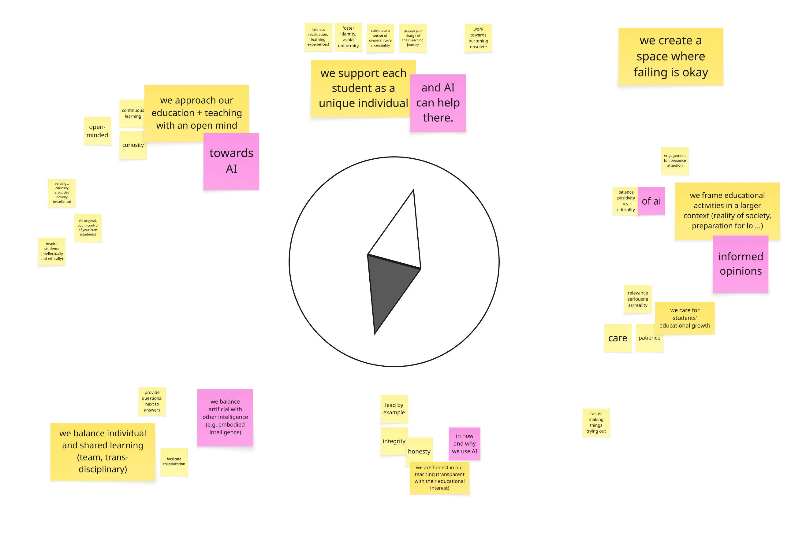

A manifesto was co-created by design educators around a shared set of educational values, including care, honesty, curiosity, a commitment to individual growth, and more. The group's consensus was that AI should serve these values, not reshape them. Technology is welcome in the room on education's terms.
Seven participants, including the facilitator, gathered for a 90-minute session to co-create a code of conduct for design educators navigating AI in their practice.
The session began with each participant writing down values they consider important as an educator, which were then grouped into clusters on the table. For each cluster, the group discussed and distilled the underlying values into a single actionable statement. In a second round, participants reflected on how AI challenges, complicates, or could be incorporated into each statement.
The outcome is a collective manifesto, a set of first-person statements that position design educators in relation to their students, their practice, and AI.

Related values include fairness in evaluation and learning experience; authenticity, in fostering identity rather than uniformity; and ownership and responsibility in students' learning journeys. Although AI can help with personalising and scaling support, it should ultimately serve these values rather than override them. One notion that emerged was that the goal of good teaching is to work towards becoming obsolete, to equip students with self-directed learning as the deeper aim.
Curiosity, continuous learning, and openness are values the group holds for themselves as much as for their students. This means inspiring students both intellectually and ethically, valuing novelty and creativity, and encouraging students to be original while remaining in control of their craft.
Good teaching connects students to the relevance and reality of their field, with seriousness, while holding care and patience towards their learning process and outcomes.
Engagement, presence, attention, and fun matter to good learning, and so does a constructive criticality towards AI.
Lead by example. Integrity and honesty in teaching means being open about the choices we make, including the choice to use or not use AI, and why.
Facilitating collaboration in team settings, working across disciplines, and posing questions alongside answers.
A reminder that AI is one kind of intelligence among many. Design education has always valued making, sensing, and doing, and those capacities should remain diverse and be examined with rigor.
After reading these statements, reflect on your own teaching practice: which of these do you already embody, and which feel like a stretch? And importantly, what is missing? This manifesto is a starting point, not a finished document. We'd love to hear what you would add.
One tension that surfaced during the session that will be worth addressing in future iterations, was the blurring between educator values and student outcomes. At several points, it wasn't clear whether a value being articulated was something participants hold for themselves as educators, or something they hope to cultivate in their students. These are related but distinct, and keeping them separate would sharpen both conversations.
Future sessions exploring values would benefit from clearer framing upfront: setting explicit boundaries, defining the scenario, and clarifying whose perspective is being elicited and when. This is a methodological note as much as a content one, and will inform how we design similar activities going forward